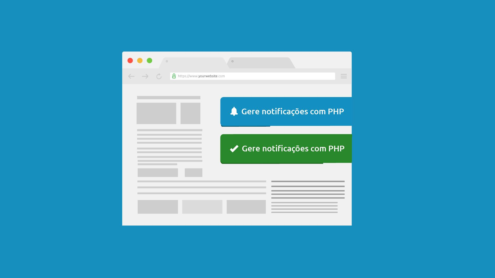

Aprenda a criar um Componente de Notificação para seu Site
Nessa aula eu vou te mostrar como que você marca o HTML, estiliza com CSS e adiciona os eventos necessários para trafegar com as informações via ajax ter um sistema de notificação completo para sua aplicação
Salve salve moquerido, Foxie aqui e vou te mostrar como criar um componente CSS bastante utilizado nos sites para notificar os usuários e visitantes.
Atendendo o pedido de mais um aluno, dessa vez vamos ver como montar toda a estrutura para colocar de forma discreta e eficaz uma área específica para notificações sem que atrapalhe a navegação e que cumpra com o seu objetivo.
Embora criar esse tipo de componente seja bastante fácil com HTML e CSS, quando entramos na parte de que precisamos colocar alguns efeitos e eventos, você pode acabar imaginando que isso é mais difícil, ou então não compreende como conciliar todas as linguagens...
Fique tranquilo, porque vamos ver como resolver tudo isso.
Processos
Para começar, a primeira coisa que vamos fazer é montar uma estrutura básica de HTML servindo todos os recursos necessários. No nosso caso, eu coloquei somente um texto e o ícone. Você pode optar por ter um título e um texto de descrição, uma área mais discreta reservada para o código de um erro, você pode também formatar um link para que em casos extremos mande um e-mail para o administrador do sistema (e nesse caso faz o uso do link)... Tudo aqui fica a seu critério!
Próximo passo é estilizar essa estrutura! Primeiramente a nossa área reservada, então para isso vamos colocar uma área no topo da página a direita, com um certo espaçamento e na frente de todos os outros elementos... Aqui vamos trabalhar um pouco com position para criar.
Depois, vamos estilizar o trigger_notify de fato... Colocar cor, bordas, fonte, espaçamento e tudo o que você julgar necessário, e por fim vamos para o javascript!
Aqui a aula começa a ficar um pouco "bagunçada", mas fique tranquilo que tudo ficará legal no final! O processo aqui é descontruir o que fizemos diretamente no código e colocar tudo isso baseado num evento, num efeito de forma que fique exatamente como planejamos no início.
E é claro, não vamos esquecer daquela barrinha de timer no final.
Comunicação
Para fazer todo o tramite entre a aplicação e o componente, vamos trabalhar com ajax para fazer as requisições. Aqui está um passo importante para que você compreenda por onde e como as informações são trabalhadas.
Num primeiro momento, caso você não tenha muita familiariadade com o jQuery, ou então com o ajax, isso pode parecer um pouco bagunçado, fora de ordem... Mas se parar para analisar com calma, vai ver que toda a informação segue por um caminho lógico. Explico:
A primeira coisa que vamos fazer na aula é capturar o evento de submeter o formulário: Com isso a gente para a atualização da página cada vez que o form é submetido, e nesse meio tempo a gente faz os tratamentos necessários.
O ajax é quem manda as informações para o PHP: Uma vez que o javascript pegou os dados do formulário, ele não tem o que fazer! Portanto, de uma forma "transparente", enviamos os dados para o php (que no nosso caso é o controller.php) para que ele dê sentido a essas informações.
Sua regra de negócio está no controlador: Aqui as informações deixam de estar dentro do javascript e passam novamente para o PHP, onde será analisado minuciosamente o que deve ser feito. Seja cadastrar um artigo, editar um usuário ou qualquer outra atividade do seu sistema. Aplicado sua regra de negócio basicamente você tem 3 possíveis resultados [sucesso, erro, alerta] e basta que você alimente as informações necessárias para disparar a notificação.
Somente a resposta volta para o javascript: Você receberá somente os parâmetros que foram setados dentro do controlador como resposta. Agora basta que você identifique essa resposta, e dê sentido a essas informações. No nosso caso, como retornamos um vetor com uma posição "notify" e este continha todas as propriedades necessárias é só fazer a mágica acontecer.
Invoque a função que você criou na aula anterior: Se todos os passos forem executados com sucesso, você chegará até aqui e terá a notificação sendo exibida na sua página.
Conclusão
Nessa a gente conseguiu montar um componente quase que por completo! Se você assistiu a aula, notou que eu informei que temos um certo gargalo aqui... O ideal é que tenhamos uma classe no PHP que seja capaz de gerenciar e invocar essas notificações quando necessário. Colocar esse conteúdo na aula, iria levar mais um bom tempo e a aula ficaria muito extensa, e como essa foi a dúvida inicial do solicitante... Missão dada, é missão cumprida!
Caso você tenha dificuldades em criar essa classe para gerenciar suas triggers, é só fazer um pedido aqui no play que eu faço a gravação dela também :)
Me conta aqui abaixo o que você achou dessa aula, se conseguiu reproduzir junto comigo o mesmo efeito e se era tão complexo/simples quanto você imaginava!
Aquele forte abraço, e a gente se vê numa próxima aula.